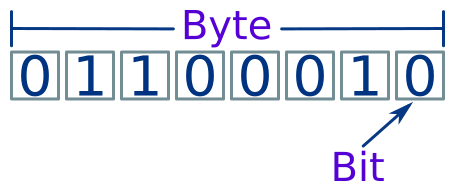
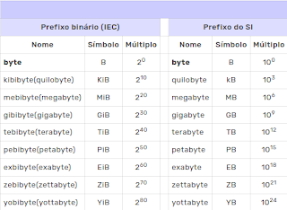

Bit (b) e byte (B) são as menores unidades de medida de dados na computação. Eles são usados para representar arquiteturas de processadores, quantidades de memória, velocidades de conexão, tamanhos de chaves criptográficas, entre outras aplicações.
Unidades decimais como kilobyte (KB), megabyte (MB) e gigabyte (GB) são comumente usadas para expressar o tamanho dos dados. Unidades binárias de medida incluem kibibyte (KiB), mebibyte (MiB) e gibibyte (GiB). Tabela 1 compara os nomes, símbolos e valores de unidades decimais e binárias.
bps, ou bit por segundo, é uma unidade de medida fundamental para quantificar a taxa de transferência de dados em um sistema de comunicação.expand_more Em outras palavras, indica a quantidade de bits que podem ser transmitidos ou recebidos em um segundo.expand_more Imagine um cano transportando água. A taxa de fluxo da água, medida em litros por segundo, seria similar à taxa de transferência de dados medida em bps.exclamation Quanto maior a taxa de fluxo, mais água é transportada em um determinado período. Da mesma forma, quanto maior a taxa de bps, mais bits de informação são transmitidos em um segundo.